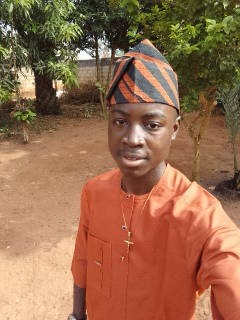
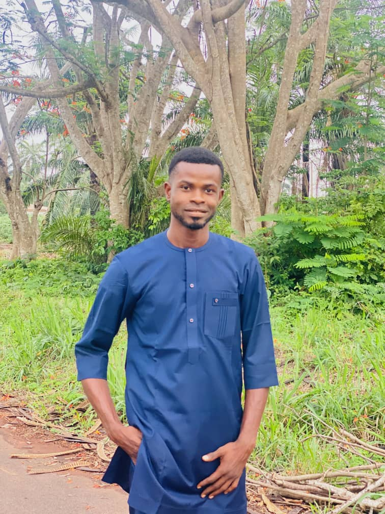
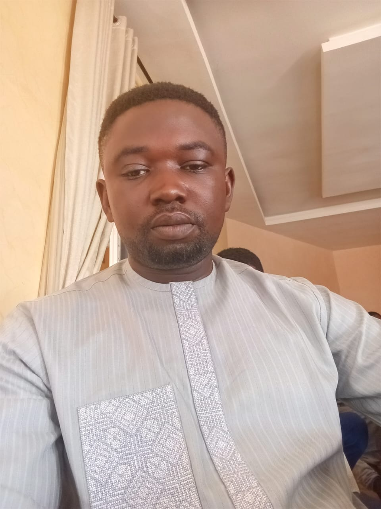
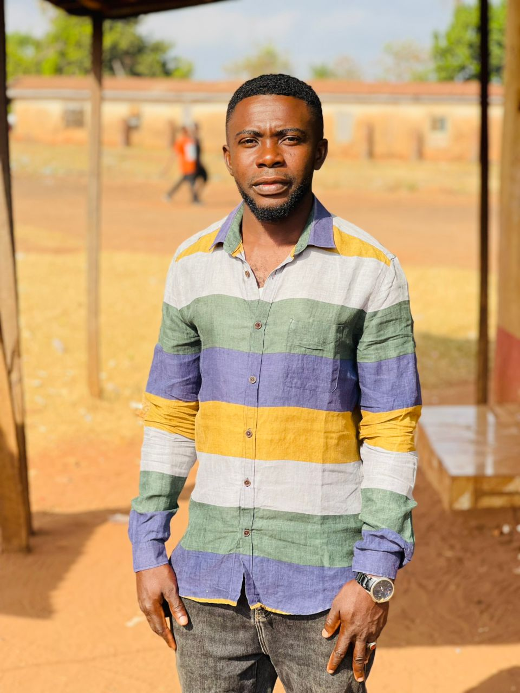
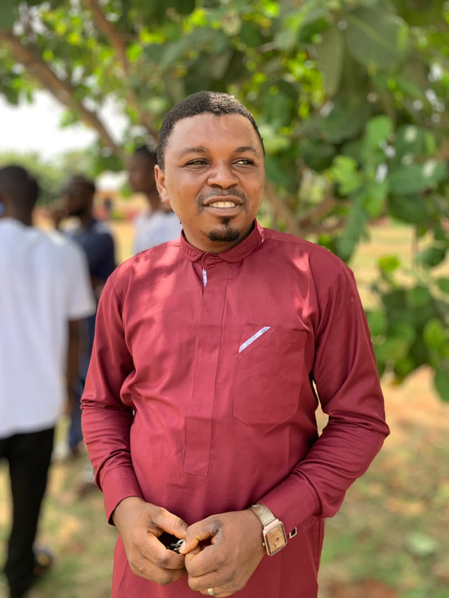
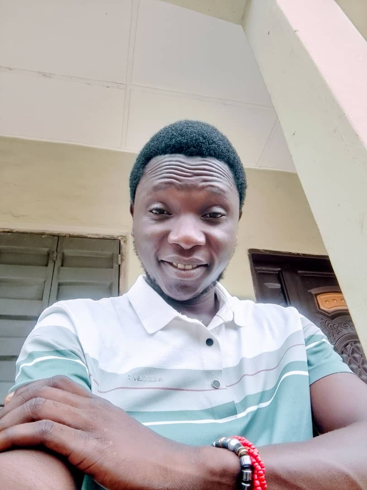

Farmer Ejima Michael
Team Leader
Location: Idah, Kogi State, Nigeria
Farm Size: 5 hectares
Main Crop/Animal specialty: Yam, Cassava, Maize
Experience: 15 years in farming
About Me: Passionate about improving farming techniques and helping fellow Igala farmers succeed. I believe in sharing knowledge and embracing sustainable practices.

Farmer Jeremiah Akowe
Chairman
Location: Ankpa, Kogi State, Nigeria
Farm Size: 4 hectares
Main Crop/Animal specialty: Cashew, Cassava, Goat Rearing
Experience: 12 years in farming
About Me:Passionate about improving agriculture through technology.

Farmer Iyede Fidelis
Vice Chairman
Location: Ibaji, Kogi State, Nigeria
Farm Size: 3 hectares
Main Crop/Animal specialty: Cashew, Rice, Beans
Experience: 10 years in farming
About Me:Passionate about bringing up the younger genration of farmers, and making them to embrace Agriculture through technology.

Farmer Labran
Seretary
Location: odolu, Kogi State, Nigeria
Farm Size: 2 hectares
Main Crop/Animal specialty: Cashew, millet, Beans
Experience: 16 years in farming
About Me:I love Agriculture cause it is the basis of existence, despite the fact that it has been neglected by some.

Farmer Morency
Crop Section Head
Location: Dekina, Kogi State, Nigeria
Farm Size: 2 hectares
Main Crop/Animal Specialty: Cashew, Rice, Poultry
Experience: 4 years in farming
About Me:Passionate about changing our motive towards Agriculture as a dirty job, but considering it as a major sector of human life.

Farmer Abuh Godday
Animal Section Head
Location: Egume, Kogi State, Nigeria
Farm Size: 4 hectares
Main Crop/Animal specialty: Pig, Goat, cattle
Experience: 7 years in farming
About Me:Passionate about producing quality and healthy livestock products for human consumption.